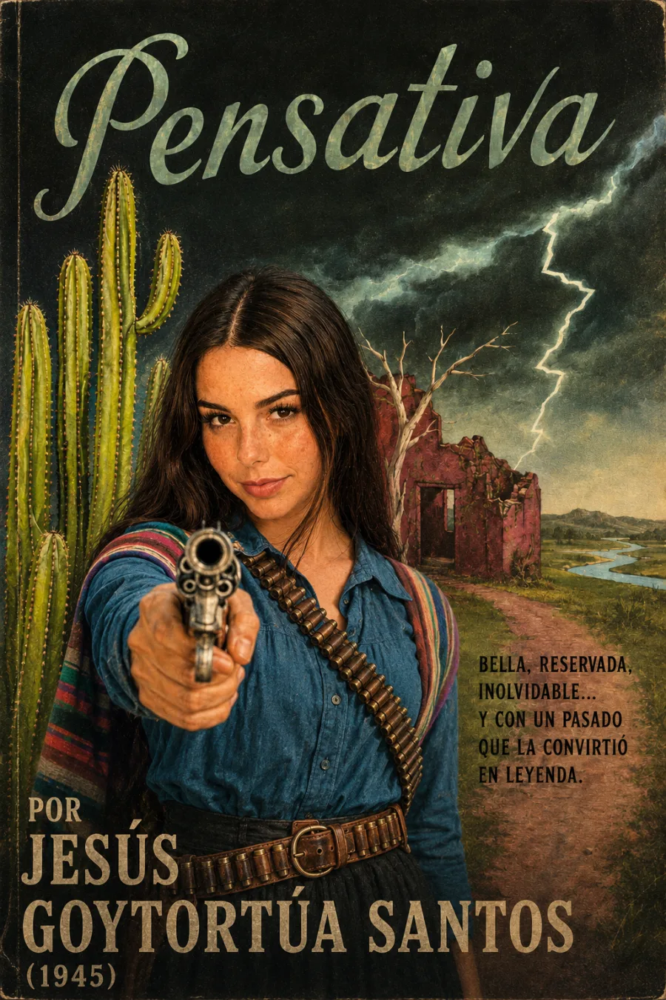

Audiolibros · Cuarta Ola
Jesús Goytortúa Santos · Novela · 1945
Pensativa
Hay silencios que guardan una guerra.
Una mujer, una hacienda, un pasado.
El amor llega donde la guerra dejó sus huellas.
Escuchar lo que sobrevive al silencio.
Grabación próximamente
Volumen

Amar después de la guerra
Roberto vuelve a Santa Clara de las Rocas y conoce a Gabriela Infante, llamada Pensativa. La atracción hacia aquella mujer reservada crece junto con las preguntas sobre su pasado. En torno a ella, las heridas de la Guerra Cristera siguen presentes en las personas, los recuerdos y los espacios que habita.
Conocer a alguien también exige mirar su historia.
La novela enfrenta el deseo de empezar de nuevo con una memoria que no puede borrarse. Gabriela no es sólo el objeto de la curiosidad amorosa del narrador: su participación en el conflicto obliga a reconsiderar la imagen que Roberto se ha formado de ella. El misterio íntimo se convierte así en una pregunta sobre el juicio, la violencia y el lugar de las mujeres en la historia.
Publicada por Porrúa en 1945; Premio Lanz Duret de 1944. Enciclopedia de la Literatura en México. Estudio sobre la representación de la mujer en Pensativa. Ilustración interpretativa de Gabriela y la memoria de la guerra.
La lectura
Lectura completa
Grabación próximamente. La lectura de la obra estará disponible aquí. Las grabaciones se incorporarán cuando estén preparadas.
Valoración

Bueno